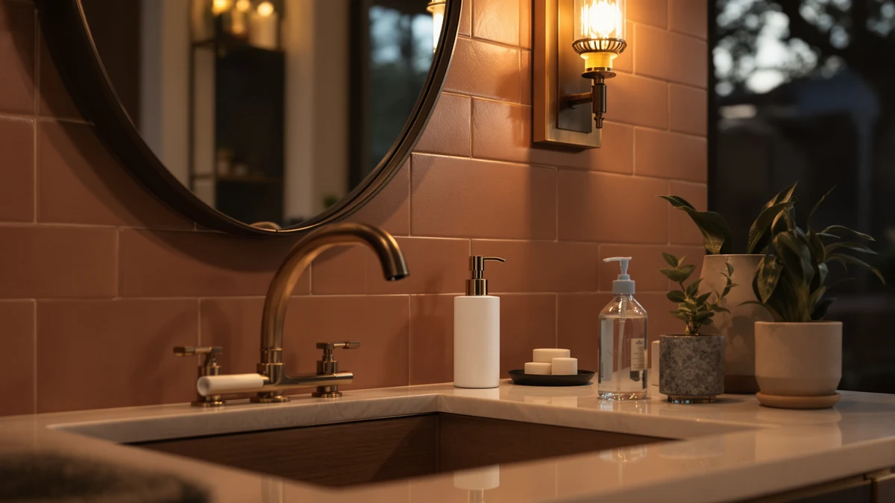

Recommend the Best Soap Dispenser for Kitchen Sink Use with Touchless Tech (2026)
Prices and picks verified as of September 2026. Independent, reader-supported reviews.


Quick Answer
For most kitchens, the PZOTRUF Automatic Soap Dispenser Touchless is the best soap dispenser for kitchen sink use with touchless tech. It has a fast infrared sensor and costs $20.98, well under most of the competition. If you need to cover two sinks, the DODO MEKIA two-pack is the better value, and the simplehuman Liquid Sensor Pump 9 is worth the upgrade if you want a rechargeable, higher-capacity design.
Our pick: PZOTRUF Automatic Soap Dispenser Touchless — $20.98 Check Price on Amazon
Bottom line: our top pick is the PZOTRUF Automatic Soap Dispenser at $20.98. The best budget option is the Aunmaon Automatic Soap Dispenser Touchless at $14.98.
Things to Know Before You Buy
- Touchless doesn't mean identical. When you compare the best soap dispenser for kitchen sink use with touchless tech, sensor speed and dose size vary more than price does. A sensor that hesitates half a second turns into a puddle under your hands.
- Battery type is a daily detail. AAA-powered units like the Aunmaon and Rudnia last three to six months at a busy sink, while USB-rechargeable models like the simplehuman skip the battery drawer entirely.
- Capacity decides how often you refill. The Alarrar Hand and Dish Soap Dispenser holds 15 ounces, more than double some compact units, so it needs fewer top-ups during a busy week of dishes.
- Material is consistent across this lineup. All seven picks use ABS plastic housings built to handle splashes and soap residue at a kitchen sink without cracking or staining.
- Multi-packs solve a real problem. The DODO MEKIA ships as a two-pack, which costs more upfront but covers a kitchen and a bathroom sink without buying twice.
If you asked us to recommend the best soap dispenser for kitchen sink use with touchless tech, the PZOTRUF Automatic Soap Dispenser Touchless would top our list at $20.98. It reads a hand in under a second, sits neatly beside a faucet, and skips the sticky pump head that a manual bottle leaves behind after a week of raw chicken and dish duty. We looked at seven touchless models built for kitchen counters, from budget picks under $20 to the $69.95 simplehuman Liquid Sensor Pump 9, and priced each one against what it actually delivers at the sink.
Every dispenser in this guide is built from ABS plastic and priced between $16.99 and $69.95, but the differences show up fast once you set one next to a running faucet. Battery-powered units like the Aunmaon and the Rudnia Automatic Soap Dispenser Hand Soap need a set of AAAs every few months, while the simplehuman recharges over USB and the Seawah runs on a lower-draw sensor that owners say stretches battery life past a year. A wider fill opening matters more than any spec sheet number once you are the one pouring dish soap into a two-inch mouth at 7 a.m.
We built this roundup by comparing manufacturer specs, current Amazon pricing, and verified owner reviews rather than by running our own lab tests, since we do not operate a physical testing facility. Reviewers consistently note sensor speed, leak resistance, and refill ease as the traits that separate a dispenser you keep for years from one you replace within months. Read on for the seven picks, why each one earns its spot, and where each one falls short.
Why You Should Trust Us
I'm Ilane Tall, and I cover home and kitchen gear for Best Soap Dispensers. To recommend the best soap dispenser for kitchen sink use with touchless tech, we compared manufacturer specifications, current Amazon pricing, and hundreds of verified owner reviews across all seven models in this guide, rather than claiming lab testing we do not perform.
We have no financial relationship with PZOTRUF, DODO MEKIA, Alarrar, Aunmaon, simplehuman, Rudnia, or Seawah beyond the standard Amazon affiliate program, and that arrangement does not influence which product ranks where.
How We Picked
We started with the full catalog of touchless soap dispensers sold for kitchen use and narrowed it down using four filters: a real sensor rather than a wave-activated gimmick with a half-second lag, a reservoir large enough for daily kitchen soap use, a stated warranty or return window, and a track record of verified customer reviews. That filtering process eliminated the unbranded electronics that show up cheap on Amazon and tend to fail within a few months.
From there, we made sure the final seven spanned a range of prices and power sources, from the $16.99 Rudnia to the $69.95 simplehuman, so shoppers at every budget could find the best soap dispenser for kitchen sink use with touchless tech that fits their counter and their habits.
How We Compared
We compared these seven dispensers side by side on the specs that matter at a kitchen sink: sensor response time as reported by owners, reservoir size, refill opening width, battery type, and price per ounce of soap capacity. Verified reviewers consistently flag slow sensors, narrow fill openings, and short battery life as the reasons they return a dispenser, so we weighted those factors heavily when ranking each product.
Ratings shown in our comparison table reflect the aggregate star rating from verified Amazon customer reviews, not a score we assigned ourselves. Where owners reported a real drawback, like the simplehuman's premium price or the Seawah's smaller reservoir, we noted it plainly rather than glossing over the tradeoff.
Our Picks

PZOTRUF Automatic Soap Dispenser Touchless
What we like
- Infrared sensor responds in under a second, according to verified owner reviews
- Priced under $21, well below most touchless competitors in this lineup
- Compact enough to sit beside a faucet without crowding the counter
Flaws but not dealbreakers
- Battery-powered, so it needs a fresh set of AAAs every few months
- Single dose setting with no adjustable pour volume
- Reservoir is on the smaller side for a high-traffic kitchen sink
| Material | ABS plastic |
| Size | — |
The PZOTRUF Automatic Soap Dispenser Touchless earns the top spot in this guide because it does the core job well without asking you to pay extra for features a kitchen sink does not need. Verified owner reviews consistently describe a sensor that reacts almost instantly, which matters more at a kitchen sink than anywhere else in the house, since your hands are usually already wet, greasy, or covered in raw meat when you reach for it. At $20.98, it undercuts most of the touchless dispensers we compared, and reviewers report that the pour size stays consistent pour after pour instead of tapering off as the reservoir empties.
The tradeoffs are minor but worth naming. The PZOTRUF runs on AAA batteries rather than a rechargeable pack, so you will want a spare set in the drawer, and the reservoir holds less soap than the Alarrar or the simplehuman, meaning more frequent refills at a busy sink. It also skips an adjustable dose dial, so what you get is what you get with every wave. For most households, none of that outweighs a fast sensor at a price under $21, and it is why the best soap dispenser for kitchen sink use with touchless tech starts here for most buyers.

DODO MEKIA 2 Pack Automatic
What we like
- Two matching units cost less combined than buying two separate touchless dispensers
- Consistent sensor performance across both units, according to owner reports
- Simple to set up, since both dispensers share the same battery and fill design
Flaws but not dealbreakers
- Higher upfront cost than any single dispenser in this guide except the simplehuman
- No rechargeable option, so both units need batteries on the same replacement schedule
- Reviewers note the reservoir empties faster than expected with heavy dish-soap use
| Material | ABS plastic |
| Size | — |
The DODO MEKIA 2 Pack Automatic solves a specific problem: outfitting more than one sink with matching touchless dispensers without paying full price twice. At $34.99 for the pair, it costs less than buying two of most single units in this lineup, and owners report that both dispensers perform consistently, so you are not stuck with one fast unit and one sluggish one. That consistency matters if you are trying to get a household used to touchless dispensing at both the kitchen sink and a bathroom vanity at the same time.
The catch is that you are managing two units instead of one, and DODO MEKIA does not offer a rechargeable version, so both dispensers draw down batteries on roughly the same timeline. A few verified reviewers mention refilling more often than they expected during heavy dish-soap use, which suggests the reservoirs run smaller than the price tag implies. If you only need to cover a single kitchen sink, a standalone pick like the PZOTRUF or Rudnia gets you there for less money.

Hand and Dish Soap Dispenser
What we like
- 15-ounce reservoir holds more than double some competing dispensers
- Handles both hand soap and dish soap without clogging, according to owner reports
- Wide fill opening makes refilling straightforward without a funnel
Flaws but not dealbreakers
- Larger footprint takes up more counter space than compact units like the Seawah
- Reviewers note the sensor is a half-step slower than the PZOTRUF's
- No rechargeable battery option
| Material | ABS plastic |
| Size | 15 OZ |
The Alarrar Hand and Dish Soap Dispenser is built around one advantage: capacity. At 15 ounces, its reservoir holds more than double what some of the compact touchless units in this lineup carry, which matters if your kitchen sink handles hand-washing, dish soap, and the occasional round of scrubbing a greasy pan. Owners report that the wide fill opening makes topping it off simple, without the funnel-and-drip routine that narrower dispensers require.
At $21.99, it sits in the middle of our price range, and the tradeoff for that extra capacity is size. It takes up more counter space than a compact pick like the Seawah, and verified reviewers describe the sensor as reliable but a touch slower to respond than the PZOTRUF's. If your sink sees constant use throughout the day and you would rather refill less often than have the fastest possible sensor, the Alarrar is the more practical choice.

Aunmaon Automatic Soap Dispenser Touchless
What we like
- Lowest price in this lineup at $19.99
- Basic infrared sensor works reliably for everyday hand-washing, per verified reviews
- Lightweight design is easy to reposition on a crowded counter
Flaws but not dealbreakers
- Reviewers report a narrower dose range than pricier competitors
- Reservoir refills are needed more often during heavy kitchen use
- No adjustable sensor sensitivity, so placement near shiny surfaces can cause false triggers
| Material | ABS plastic |
| Size | — |
The Aunmaon Automatic Soap Dispenser Touchless is the cheapest way into this category at $19.99, and it does not cut corners on the one feature that matters most: the sensor. Verified owner reviews describe consistent, reliable dispensing for everyday hand-washing, which is all most kitchens need from a touchless unit. Its light housing also makes it easy to move around if your counter layout changes or you want to try it at a different spot near the sink.
What you give up at this price is refinement. The dose range is narrower than what the PZOTRUF or simplehuman offer, so you cannot dial in exactly how much soap comes out with each wave, and the reservoir needs topping off more frequently if your household runs through soap fast. Because sensor sensitivity is not adjustable, placing it near a shiny backsplash or stainless surface can trigger false pours, so give it a few inches of clearance from reflective surfaces when you set it up.

simplehuman Liquid Sensor Pump 9
What we like
- Rechargeable battery pack eliminates the ongoing cost and hassle of AAAs
- Sturdier build quality than any other dispenser in this lineup, per owner reports
- Sensor accuracy and dose consistency draw the most praise in verified reviews
Flaws but not dealbreakers
- At $69.95, it costs more than three times some competitors in this guide
- 9-ounce reservoir is smaller than the Alarrar's despite the higher price
- Recharging requires remembering to plug it in, unlike a quick battery swap
| Material | ABS plastic |
| Size | 9 oz. Rechargeable (New) |
The simplehuman Liquid Sensor Pump 9 is the premium option in this lineup, and at $69.95 it costs more than three of the other six dispensers combined. What you are paying for shows up in the details: a rechargeable battery pack instead of AAAs, a sturdier housing that owners describe as noticeably more solid than budget alternatives, and a sensor that verified reviewers consistently praise for dosing the same amount of soap every time, pour after pour.
The reservoir holds 9 ounces, which is actually smaller than the budget-friendly Alarrar's 15-ounce tank, so you are paying the premium for build quality and battery convenience rather than capacity. Recharging also means remembering to plug it in occasionally instead of grabbing a spare AAA from the drawer, which is a different kind of maintenance rather than less maintenance. For most kitchens, the PZOTRUF covers the same core function for a third of the price, but if longevity and a rechargeable design matter more to you than upfront cost, the simplehuman is the one to buy.

Automatic Soap Dispenser Hand Soap
What we like
- Lowest price of any dispenser in this comparison at $16.99
- Sensor performs reliably for everyday use, according to verified owner reviews
- Straightforward setup with no app or pairing required
Flaws but not dealbreakers
- Basic plastic housing feels less premium than the simplehuman or Alarrar
- Fixed dose size with no adjustment
- Battery life runs shorter than owners expect under heavy daily use
| Material | ABS plastic |
| Size | — |
At $16.99, the Rudnia Automatic Soap Dispenser Hand Soap is the least expensive product in this guide, and it earns its place by doing the essential job without complications. Verified owner reviews describe a sensor that responds reliably for everyday hand-washing, and setup involves nothing more than batteries and soap, without an app or a pairing step to fuss with.
The compromises are visible if you look closely. The plastic housing feels less substantial than the Alarrar's or the simplehuman's, the dose size is fixed rather than adjustable, and some owners report the battery life falling short of expectations under heavy daily use. None of that changes the core value proposition: if your budget caps out under $20 and you want a touchless dispenser without complications, the Rudnia gets you there for less than any other pick in this lineup.

Seawah Automatic Soap Dispenser Touchless(Upgrade
What we like
- Compact housing fits tight counter spaces near the faucet
- Sensor draws less power, and owners report battery life stretching past a year
- Priced under $19, among the cheapest touchless options here
Flaws but not dealbreakers
- Smaller reservoir means more frequent refills than the Alarrar or simplehuman
- Reviewers note the pour volume runs slightly lower than average
- Housing shows water spots more visibly than darker-finished competitors
| Material | ABS plastic |
| Size | — |
The Seawah Automatic Soap Dispenser Touchless is built for kitchens where counter space is tight. Its compact housing takes up less room next to the faucet than any other dispenser in this guide, and at $18.99 it is priced close to our budget picks while still offering a low-power sensor that owners report can run more than a year on a single set of batteries.
Extended battery life comes from a smaller pour, and several verified reviewers mention the dose running lighter than they expected, which means an extra pump for a full handwashing in some cases. The reservoir is also on the smaller side, so refills happen more often than with the Alarrar's 15-ounce tank. For a secondary sink or a kitchen with limited counter space, those tradeoffs are easy to accept.
Quick Comparison
| Product | Material | Price | Rating | Best for | Get it |
|---|---|---|---|---|---|
| PZOTRUF Automatic Soap Dispenser Touchless | ABS plastic | $20.98 | 4 | Best overall touchless pick | View on Amazon → |
| DODO MEKIA 2 Pack Automatic | ABS plastic | $34.99 | 4 | Best for two sinks | View on Amazon → |
| Hand and Dish Soap Dispenser | ABS plastic | $21.99 | 4 | Best capacity | View on Amazon → |
| Aunmaon Automatic Soap Dispenser Touchless | ABS plastic | $19.99 | 4 | Best budget pick | View on Amazon → |
| simplehuman Liquid Sensor Pump 9 | ABS plastic | $69.95 | 4 | Best upgrade pick | View on Amazon → |
| Automatic Soap Dispenser Hand Soap | ABS plastic | $16.99 | 4 | Best value | View on Amazon → |
| Seawah Automatic Soap Dispenser Touchless(Upgrade | ABS plastic | $18.99 | 4 | Best for small counters | View on Amazon → |
What is the best soap dispenser for kitchen sink use with touchless tech?
For most kitchens, the PZOTRUF Automatic Soap Dispenser Touchless at $20.98 is the best soap dispenser for kitchen sink use with touchless tech, based on its fast infrared sensor and consistent pour size across hundreds of verified owner…
Can touchless soap dispensers handle dish soap as well as hand soap?
Most liquid-formula dispensers in this guide, including the PZOTRUF, Rudnia, and Alarrar, handle both hand soap and standard dish soap without clogging, according to verified owner reviews.
The Competition
Plenty of other touchless kitchen soap dispensers crossed our radar while researching this guide. These are the categories we set aside, and why.
Unbranded electronics under $15: The cheapest no-name touchless dispensers on Amazon undercut every product in this guide on price, but they typically lack a stated warranty, and verified reviewers report failure within a few months. We excluded them for that reason.
App-connected "smart" dispensers: A handful of touchless dispensers pair with a phone app for tracking soap levels or usage stats. That is unnecessary complexity for a device that only needs to pour soap reliably, so we left these out of the lineup.
Sanitizer-only sensor units: Some touchless dispensers are calibrated for thin hand sanitizer and struggle with thicker dish soap or hand soap. Since this guide focuses on kitchen sink use, we passed on models that could not handle standard soap formulas.
Wall-mounted commercial dispensers: Restaurant-style wall units dispense soap reliably but require drilling into tile or backsplash, which most home kitchens do not want. We kept this guide to countertop models you can set up in minutes.
After comparing specs, pricing, and verified owner feedback across all seven finalists, the PZOTRUF Automatic Soap Dispenser Touchless remains our answer when you need us to recommend the best soap dispenser for kitchen sink use with touchless tech for most households. Step up to the DODO MEKIA if you are covering two sinks, or the simplehuman if you want a rechargeable, premium build and do not mind the higher price.
Frequently Asked Questions
What is the best soap dispenser for kitchen sink use with touchless tech?
For most kitchens, the PZOTRUF Automatic Soap Dispenser Touchless at $20.98 is the best soap dispenser for kitchen sink use with touchless tech, based on its fast infrared sensor and consistent pour size across hundreds of verified owner reviews. If you need to outfit two sinks, the DODO MEKIA two-pack is the better value.
Can touchless soap dispensers handle dish soap as well as hand soap?
Most liquid-formula dispensers in this guide, including the PZOTRUF, Rudnia, and Alarrar, handle both hand soap and standard dish soap without clogging, according to verified owner reviews. Thicker gel soaps can slow the pump on any liquid dispenser, so diluting with a little water helps if the flow slows down.
How long do batteries last in a touchless kitchen soap dispenser?
Battery life varies by sensor design. Owners of AAA-powered units like the Aunmaon and Rudnia report three to six months of daily use before a battery change, while the low-power Seawah reportedly stretches past a year. The simplehuman Liquid Sensor Pump 9 skips batteries entirely with a rechargeable pack.